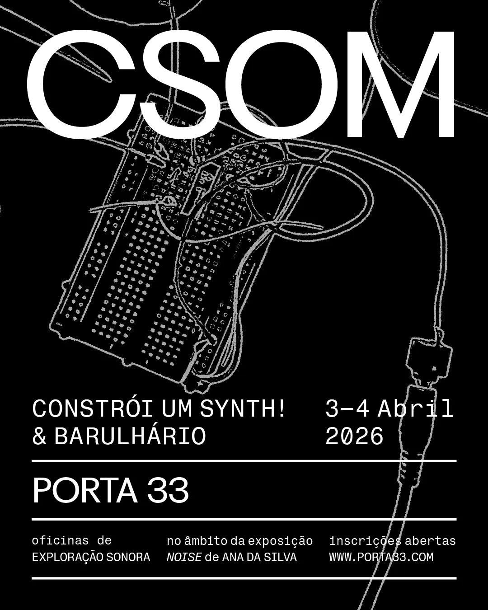
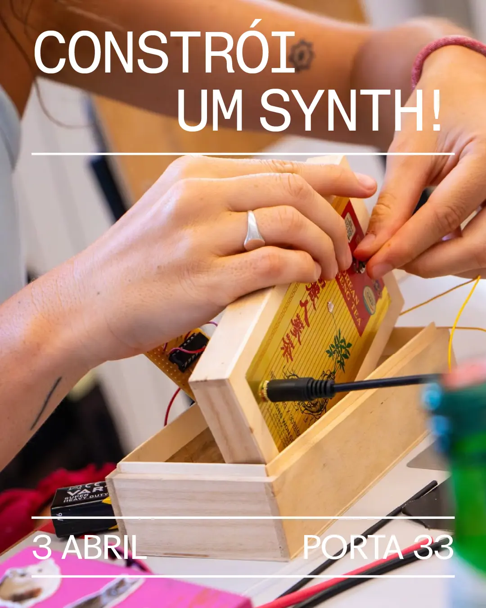
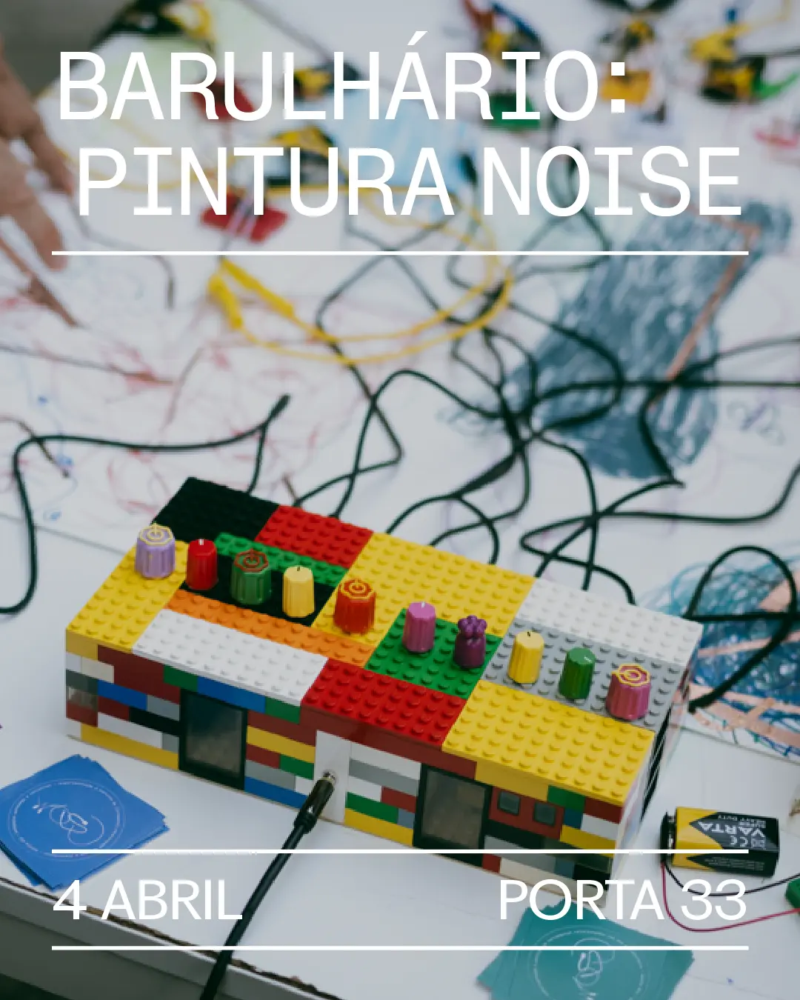
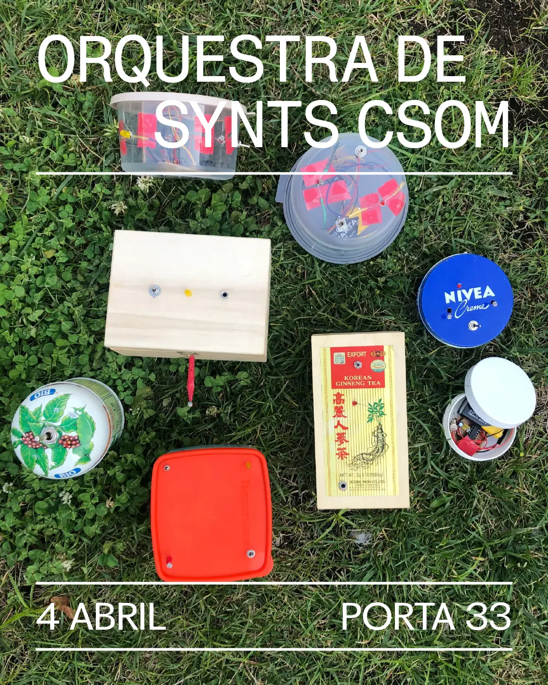

CSOM @ PORTA33 - 3 E 4 DE ABRIL NO FUNCHAL



Nesta oficina vamos aprender a soldar e a construir um PHOTOSYNTH, um sintetizador que funciona com células fotossensíveis. Estas células transformam a intensidade de luz em sinal eléctrico que depois controla a frequência e a modulação do som gerado. Podes modular o som com um knob ou com a tua mão, aproximando-te ou afastando, de forma a entrar mais ou menos luz. Podes também usar uma lanterna ou outra fonte luminosa, para criar diferentes sons.
Detalhes
Local: Porta33 – Rua do Quebra Costas 33, Funchal
Horários: sexta-feira, 3 de Abril, das 14H às 19H
Contribuição: 25€ (Todos os materiais estão incluídos. Apenas tens de trazer a caixa onde queres construir o teu Photosynth.)
Destinatários: adolescentes (+ 15 anos) e adultos
Lotação máxima: 10 participantes.
Inscrições aqui: aqui

Nesta oficina, a pintura vai transformar-se em noise! Vamos começar por falar sobre som e eletricidade, e aprender a montar um circuito eletrónico numa breadboard. Depois, vamos inspirar-nos na exposição de Ana Silva e transformar as nossas pinceladas numa pintura coletiva sonorizada.
Uma experiência criativa onde arte visual e som se encontram.
Detalhes
Local: Porta33 – Rua do Quebra Costas 33, Funchal
Horários: sábado, 4 de abril, das 15H às 17H30
Contribuição: 15€ (material incluído)
Destinatários: crianças dos 7 aos 12 anos
Lotação máxima: 10 crianças
Os pais ou responsáveis podem acompanhar as crianças, mas não é obrigatório.
Inscrições: aqui
Oficina para explorar som e pintura de forma lúdica 🎨🔊

A OSC — Orquestra de Synths CSOM convida todas as pessoas que participaram nas oficinas a juntarem-se com as suas criações sonoras num concerto coletivo, aberto ao público.
Detalhes
Local: Porta33 – Rua do Quebra Costas 33, Funchal
Horários: sábado, 4 de abril, às 18H00
Concerto coletivo aberto ao público 🎼
[clica nas fitas de cobre]